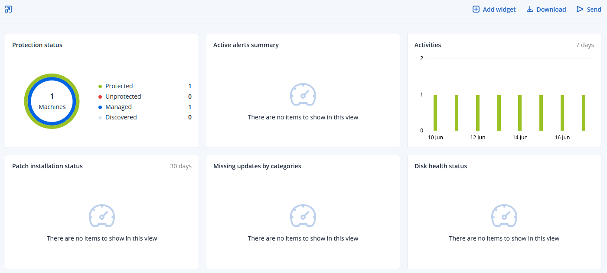
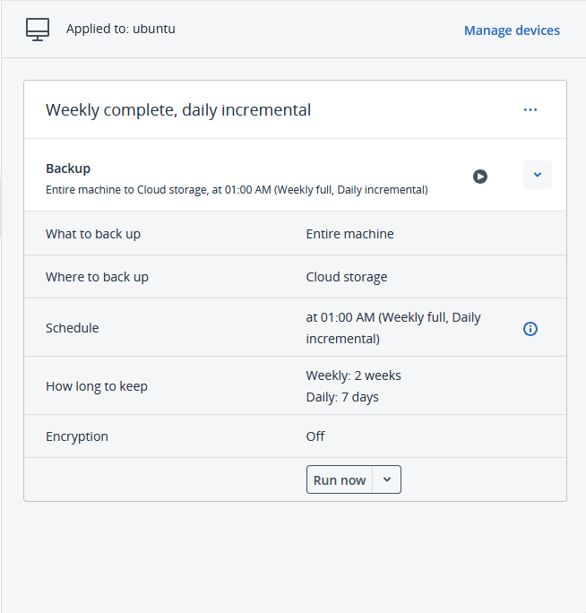
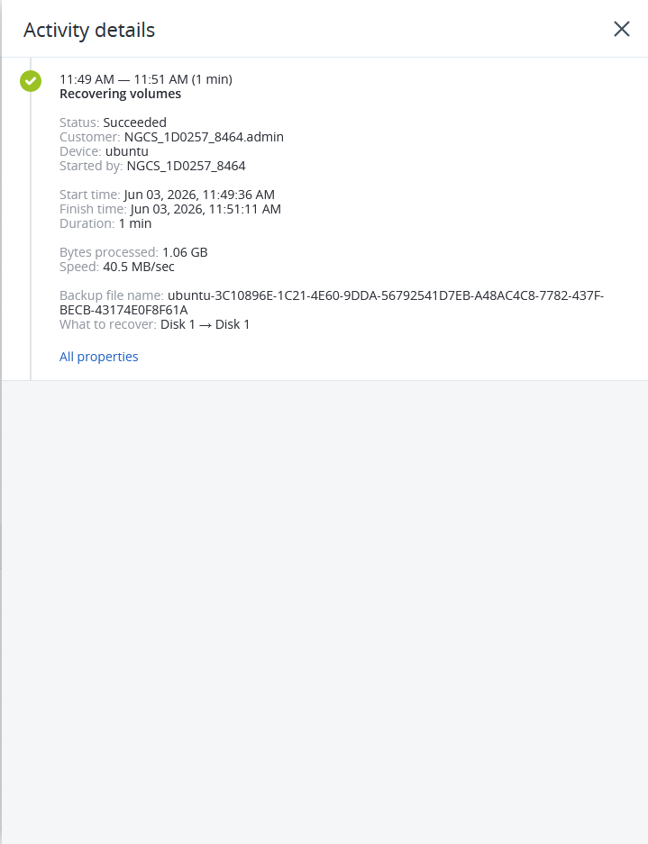

Backup & Recovery Lab
Backup and disaster recovery environment designed to protect critical infrastructure services, application data, and configuration files through automated backups and restoration testing.
Project Overview
This project demonstrates backup and disaster recovery procedures for Linux servers and containerized applications. The lab focuses on protecting application data, configuration files, and system services while validating recovery processes to minimize downtime during failures.
Backup Architecture
Production Services
|
+-- Docker Containers
|
+-- MariaDB Data
|
+-- Application Files
|
+-- Configuration Files
|
v
Acronis Backup
|
v
Backup Storage
|
v
Recovery Testing
Backup Infrastructure
Configured centralized backup policies to protect application data, databases, and infrastructure configurations.
- Installed and configured Acronis Backup
- Created automated backup schedules
- Configured backup retention policies
- Monitored backup job status
- Verified backup completion and integrity


Recovery Testing
Conducted restoration testing to validate backup effectiveness and ensure business continuity during simulated failures.
- Performed file restoration tests
- Validated Docker configuration recovery
- Verified database restoration procedures
- Tested application functionality after recovery
- Documented recovery procedures
